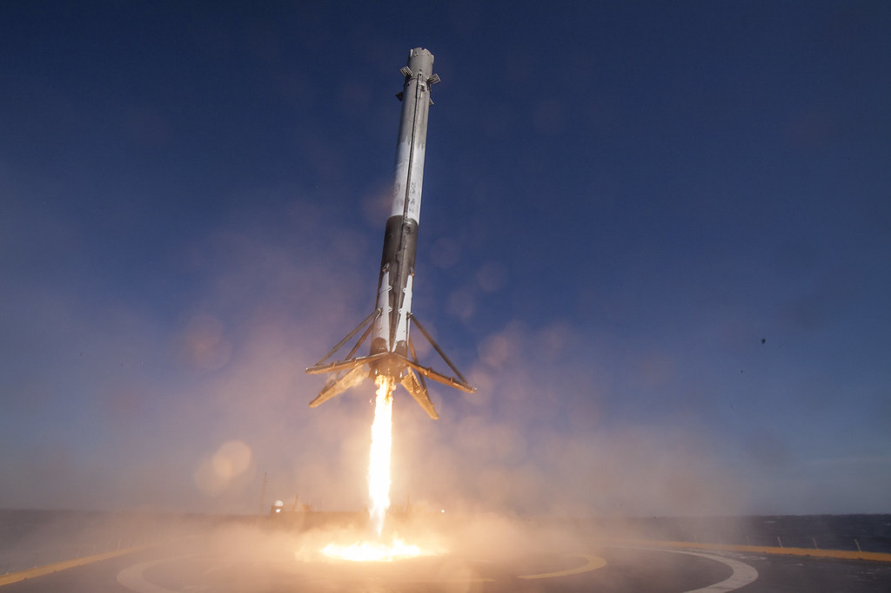
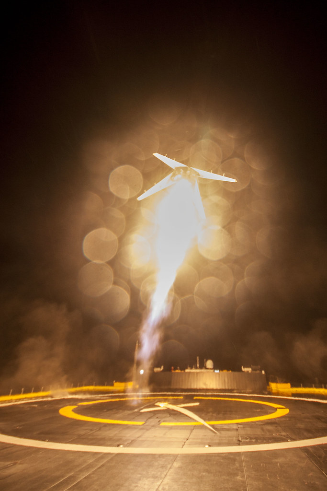
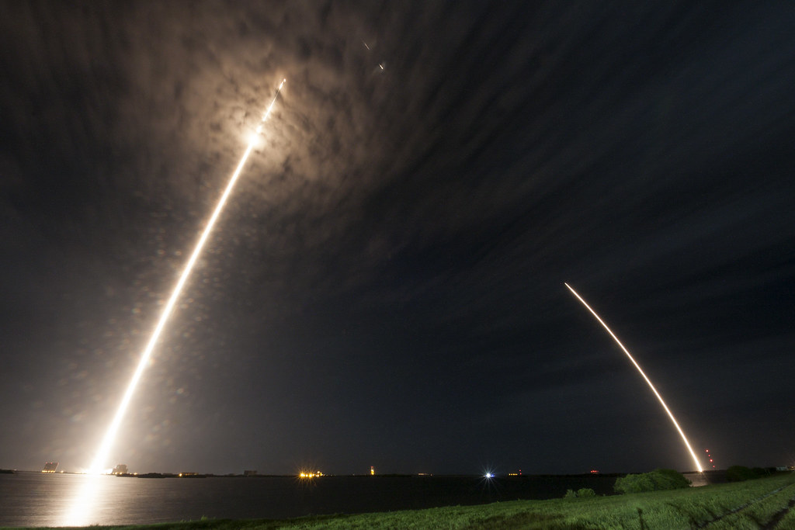
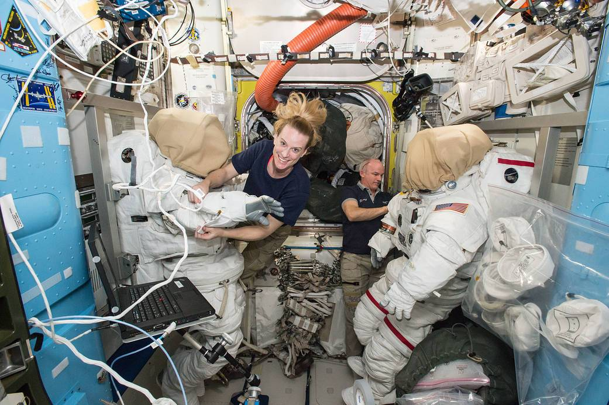

Storia SpaceX · Undicesima parte · Gennaio–agosto 2016
Dragon riparte, il Falcon impara ad atterrare in mare
L'atterraggio a terra di dicembre dà fiducia alla squadra. Il 2016 porta altri tentativi, il primo recupero sulla piattaforma oceanica e otto missioni riuscite. Una ripresa concreta, fino alla fine di agosto, prima di AMOS-6.
Indice Storia SpaceXUna conferma a terra, altre prove sull'oceano
Il 2016 comincia con un risultato che SpaceX può finalmente mostrare: un primo stadio è tornato a Cape Canaveral dopo un lancio commerciale e non è caduto. La sera del 21 dicembre ha dimostrato che la sequenza di ritorno può riuscire fino all'ultimo istante. È una ragione concreta per insistere, anche se la piattaforma oceanica pone problemi differenti. Il programma non riparte da una promessa; riparte da un veicolo recuperato, da esaminare insieme ai dati del volo.
I tentativi in mare restano sperimentali. È importante ricordarlo quando il booster si rovescia o si distrugge: il lancio può aver già svolto correttamente il lavoro pagato dal cliente, oppure il secondo stadio può essere ancora impegnato a completarlo. Il mancato recupero riguarda un obiettivo aggiuntivo e non trasforma una consegna riuscita in una perdita del carico. SpaceX usa esplicitamente questa distinzione nei propri materiali di missione. [1]
Non significa che perdere un primo stadio sia irrilevante. Si distrugge hardware, si possono danneggiare le attrezzature di recupero e si deve capire perché la prova non abbia funzionato. Ma sarebbe sbagliato mettere quelle immagini sullo stesso piano di CRS-7, quando Dragon e i suoi rifornimenti non hanno raggiunto l'orbita. L'azienda può continuare a servire clienti e NASA mentre raccoglie informazioni sul rientro. Il successo terrestre incoraggia questa sperimentazione senza garantirne ogni esito.
Recuperare in mare non è soltanto una scelta scenografica. Tornare verso la costa richiede propellente e condizioni di volo compatibili. Su alcune missioni il booster può invece proseguire lungo la direzione della salita e cercare una piattaforma più lontana. Questa possibilità amplia i casi in cui il recupero può essere tentato. Per farla funzionare bisogna però arrivare su un bersaglio nel mare aperto, con margini che cambiano da una missione all'altra.
Jason-3 e SES-9: il carico arriva, il booster no
Il 17 gennaio Falcon 9 parte da Vandenberg con Jason-3, una missione internazionale per misurare il livello dei mari. NOAA, NASA, CNES ed EUMETSAT proseguono una serie di osservazioni utile a studiare oceani e clima. Il satellite viene consegnato correttamente. Per la NASA è anche un servizio di lancio scientifico che torna a impiegare SpaceX dopo l'incidente dell'anno precedente. [2]
Il veicolo è l'ultimo Falcon 9 v1.1, la versione precedente al Full Thrust già impiegato in dicembre. Il recupero viene tentato su una piattaforma nel Pacifico. Il booster la raggiunge, ma non rimane in piedi: una gamba non si blocca correttamente e il veicolo si rovescia. La vicinanza al risultato non equivale al risultato stesso. È proprio la parte finale della sequenza a dover essere affidabile, perché un primo stadio caduto non è disponibile per le verifiche e il possibile riutilizzo. [3]
La missione del 4 marzo, con SES-9, porta invece un satellite commerciale verso l'orbita di trasferimento geostazionaria. Il profilo di volo richiede molto al lanciatore e lascia condizioni difficili per il ritorno del primo stadio. SpaceX tenta ugualmente il recupero oceanico; questa volta il booster non viene conservato. Il secondo stadio porta a termine la consegna del satellite. [4]
Per SES il risultato utile è un veicolo con cui offrire servizi di comunicazione, non la permanenza del Falcon sulla piattaforma. Il satellite entrerà in servizio il 1° giugno. L'attività del cliente continua quindi sulla base della missione riuscita. Questo rende evidente perché un filmato del recupero fallito, visto da solo, racconti male il lancio: mostra un problema reale, ma non quello che è successo al carico. [5]
8 aprile: Dragon torna a rifornire la stazione
CRS-8 ha un'importanza particolare. È la prima Dragon cargo lanciata dopo quella perduta nel giugno 2015. La ripresa di dicembre ha rimesso in servizio Falcon 9; adesso deve tornare anche il trasporto di rifornimenti per la Stazione spaziale internazionale. Il lancio dell'8 aprile riesce e Dragon si avvia verso la ISS. Il cliente che aveva perso una missione torna a ricevere il servizio, con una capsula e un carico nuovi. [6]
Fra i materiali trasportati c'è BEAM, il modulo espandibile costruito da Bigelow Aerospace. Sistemato nel vano esterno di Dragon, serve a sperimentare una tecnologia diversa dagli abituali moduli rigidi della stazione. La missione deve prima consegnarlo; le operazioni sulla ISS verranno dopo. BEAM sarà espanso il 28 maggio e riceverà il primo ingresso di un astronauta il 6 giugno. Il valore di CRS-8 comprende dunque ricerca e lavoro in orbita, anche se quel giorno il recupero del booster attirerà una parte enorme dell'attenzione. [7]
Il primo stadio cerca la piattaforma Of Course I Still Love You, nell'Atlantico. La diretta mostra la discesa sul ponte e, questa volta, il veicolo fermo e verticale. Dopo l'atterraggio terrestre di dicembre, arriva il primo recupero riuscito sulla piattaforma oceanica. Nelle immagini da Hawthorne tornano applausi e urla: anche il bersaglio che aveva conservato soltanto i segni dei precedenti tentativi adesso sostiene un razzo intero. [8]
È un successo distinto da quello di Landing Zone 1. Completa una prova che serve per le missioni nelle quali il ritorno a terra non è la soluzione praticabile. La fiducia nata in dicembre trova così una nuova conferma. Non tutto il percorso verso il riutilizzo è risolto, ma SpaceX dispone ora di due modalità di recupero riuscite: sulla costa e in mare. Per la squadra, il risultato dell'8 aprile aggiunge una capacità che non poteva essere ricavata dal solo atterraggio terrestre.

.jpg){kind=link}
La diretta del primo recupero in mare
La registrazione ufficiale di CRS-8 permette di seguire insieme il lancio di Dragon, il tentativo sulla piattaforma e la reazione della squadra. Il recupero è presentato da SpaceX come una prova sperimentale già nella descrizione preparata per il pubblico.
Apri il video sul canale ufficiale SpaceX. Il filmato è incorporato, non ripubblicato.
Maggio: riuscire anche dopo un volo più impegnativo
Il 6 maggio Falcon 9 lancia JCSAT-14 per SKY Perfect JSAT. Prima della partenza SpaceX avverte nel dossier che velocità e riscaldamento del rientro rendono improbabile un recupero riuscito. Non è una promessa mancata in anticipo: è il riconoscimento di condizioni più severe rispetto alla missione di aprile. Il satellite viene consegnato all'orbita di trasferimento prevista e il booster, contro quella prudente aspettativa, atterra sulla piattaforma. [9] [10]
Il risultato estende ciò che è stato dimostrato. CRS-8 aveva provato il recupero oceanico dopo una missione in orbita bassa; JCSAT-14 lo ottiene dopo un lancio diretto verso un'orbita di trasferimento geostazionaria. Anche qui il primo stadio non raggiunge quell'orbita: contribuisce alla salita e poi si separa. È il profilo richiesto al veicolo completo a condizionare quanta energia debba essere smaltita durante il suo ritorno e quali margini restino per la frenata.
Il 27 maggio arriva Thaicom 8. Il carico viene consegnato e il primo stadio torna sulla piattaforma. Sono tre recuperi oceanici consecutivi riusciti: CRS-8, JCSAT-14 e Thaicom 8. L'elenco comincia ad avere un valore diverso dalla singola fotografia di aprile, perché mostra risultati ripetuti durante missioni diverse. Non basta ancora a promettere che ogni booster tornerà, ma rende meno plausibile considerare il primo successo un episodio isolato. [11]

.jpg){kind=link}
Giugno: la serie si interrompe, i lanci proseguono
Il 15 giugno Falcon 9 trasporta ABS-2A ed Eutelsat 117 West B. Entrambi i satelliti vengono rilasciati correttamente. Per Eutelsat il lancio è il passaggio necessario per avviare l'inserimento e le verifiche del nuovo satellite; il comunicato del cliente conferma la separazione del proprio veicolo. [12]
Il recupero non riesce. Nella spiegazione iniziale comunicata da SpaceX e Musk il problema riguarda la disponibilità di ossigeno durante la frenata finale, con spinta insufficiente a evitare l'impatto. Va trattata come spiegazione resa dopo il tentativo, non come un rapporto indipendente con ogni dettaglio già verificato. Il fatto certo per il programma di recupero è che il booster va perduto; la serie di atterraggi riusciti si ferma. [13]
Questo insuccesso non smentisce che la manovra possa funzionare. Dimostra che deve funzionare entro i margini effettivamente disponibili, non soltanto quando tutte le condizioni sono favorevoli. La sperimentazione serve anche a riconoscere quei limiti. Dopo l'incoraggiamento dell'atterraggio a terra e i tre successi oceanici, SpaceX continua le prove: i satelliti restano in orbita e il calendario dei lanci non viene sospeso per la perdita del primo stadio.
Luglio: torna Dragon, arriva l'adattatore perduto con CRS-7
Il 18 luglio parte CRS-9. Dragon porta esperimenti e materiali, insieme a IDA-2, il nuovo adattatore di attracco destinato alle capsule commerciali con equipaggio. La consegna affronta una conseguenza concreta di CRS-7: il primo adattatore era andato perduto con quel carico. Non è lo stesso pezzo recuperato; è un altro componente che può finalmente arrivare alla stazione. [14]
Il primo stadio atterra a Landing Zone 1. È il secondo recupero terrestre riuscito, dopo quello di dicembre. La fotografia a lunga esposizione conserva le due traiettorie, lancio e ritorno, nella notte della Florida. L'atterraggio non ha più il carattere assolutamente nuovo della prima volta, ma ottenerlo di nuovo conta: la capacità comincia a essere verificata con un altro veicolo e un'altra missione. [15]
Il 19 agosto Jeff Williams e Kate Rubins installano IDA-2 durante un'attività extraveicolare. Dragon ha consegnato l'hardware; gli astronauti completano il lavoro necessario per farlo diventare parte della stazione. È un passaggio che collega la ripresa dei rifornimenti al futuro trasporto di persone. Il ritorno alla normalità non riguarda soltanto la frequenza delle partenze da Cape Canaveral: riguarda anche ciò che riprende a essere possibile in orbita. [16]

.jpg){kind=link}
Agosto: un altro recupero e un cliente per il riutilizzo
Il 14 agosto viene lanciato JCSAT-16. La consegna commerciale riesce e il primo stadio atterra sulla piattaforma oceanica. È il quinto recupero riuscito del 2016 e il sesto includendo ORBCOMM-2 del dicembre precedente. Quattro di questi sei sono avvenuti in mare, due a terra. Il numero descrive un programma che ha accumulato hardware da esaminare, non soltanto filmati di tentativi. [17]
Il 26 agosto Dragon CRS-9 torna nel Pacifico con materiali e risultati della ricerca. Anche il ritorno della capsula appartiene al servizio: consente di riportare a terra campioni e attrezzature da studiare. Il programma dei rifornimenti ha così completato un'altra missione, mentre il recupero del primo stadio resta una capacità separata, sviluppata durante il lancio. [18]
Il 30 agosto SES e SpaceX annunciano un accordo per lanciare SES-10 con un primo stadio già impiegato. Martin Halliwell, responsabile tecnico di SES, esprime fiducia nelle verifiche svolte; Gwynne Shotwell presenta il nuovo volo di un booster come una tappa verso il riutilizzo. La previsione è allora il quarto trimestre del 2016. A fine agosto è un impegno commerciale annunciato, non un secondo volo già riuscito. [19]
È un cambiamento importante rispetto a dicembre. Recuperare un booster permette di analizzarlo; trovare un cliente disposto a usarlo di nuovo apre la verifica del servizio che SpaceX intende offrire. Restano da dimostrare la preparazione, l'affidabilità al nuovo impiego e la convenienza economica. Il contratto non risolve da solo queste domande, ma mostra che il lavoro ha trovato un interlocutore commerciale pronto a partecipare alla tappa successiva.

Otto missioni riuscite, cinque recuperi nel 2016
Fermandosi alla fine di agosto, il conto è chiaro: otto lanci nel 2016, tutti con consegna del carico riuscita. Sommando ORBCOMM-2 sono nove lanci riusciti dalla ripresa dopo CRS-7. I recuperi del primo stadio hanno invece un andamento diverso, con cinque successi e tre insuccessi nel 2016. Tenere separate le due colonne permette di leggere la storia senza attribuire al cliente il fallimento di una prova sperimentale.
| Data | Missione | Consegna del carico | Recupero del primo stadio |
|---|---|---|---|
| 17 gennaio | Jason-3 | Riuscita | Non riuscito, piattaforma nel Pacifico |
| 4 marzo | SES-9 | Riuscita | Non riuscito, piattaforma nell'Atlantico |
| 8 aprile | CRS-8 | Riuscita | Riuscito, piattaforma nell'Atlantico |
| 6 maggio | JCSAT-14 | Riuscita | Riuscito, piattaforma nell'Atlantico |
| 27 maggio | Thaicom 8 | Riuscita | Riuscito, piattaforma nell'Atlantico |
| 15 giugno | ABS-2A / Eutelsat 117 West B | Riuscita | Non riuscito, piattaforma nell'Atlantico |
| 18 luglio | CRS-9 | Riuscita | Riuscito, Landing Zone 1 |
| 14 agosto | JCSAT-16 | Riuscita | Riuscito, piattaforma nell'Atlantico |
Il progresso non consiste nell'assenza di problemi. Consiste nel poter confrontare tentativi e risultati mantenendo attivo il servizio principale. Il primo atterraggio terrestre ha dato fiducia; quelli oceanici hanno ampliato le condizioni in cui il recupero riesce. Restano perdite e limiti da correggere. Alla fine di agosto SpaceX ha comunque consegnato nuovi satelliti, riportato Dragon sulla ISS e ottenuto un accordo per provare il riutilizzo con un cliente commerciale.
Un accenno a Marte
All'orizzonte c'è un progetto molto più grande. Il 27 settembre 2016, allo IAC di Guadalajara, Musk presenterà l'Interplanetary Transport System, ITS, il superrazzo e il veicolo pensati per Marte. Non si chiama ancora Starship. Sarà un capitolo a parte: qui ci fermiamo alla fine di agosto, prima dell'incidente di AMOS-6 e prima di quella presentazione. [20]
Fonti e documentazione
Ricostruzione aggiornata il 9 ottobre 2026. Il periodo narrato termina nell'agosto 2016. Gli esiti del lancio e del recupero sono distinti; la natura sperimentale è documentata dai materiali SpaceX preparati prima dei tentativi.
- [1] SpaceX, dossier CRS-8, aprile 2016, conservato dalla NASA. Profilo della missione e tentativo sperimentale di recupero.
- [2] NASA, Jason-3 Launches to Monitor Global Sea Level Rise, 17 gennaio 2016. Consegna, partner e obiettivi scientifici.
- [3] NASA, Aeronautics and Space Report of the President, anno fiscale 2016, versione v1.1 impiegata per Jason-3; SpaceX, aggiornamento del 17 gennaio 2016 sul mancato blocco della gamba, riprodotto nella cronaca contemporanea della Planetary Society.
- [4] SpaceX, diretta ufficiale SES-9, 4 marzo 2016. Lancio e profilo della missione.
- [5] SES, risultati del terzo trimestre 2016. Conferma dell'entrata in servizio di SES-9 il 1° giugno e accordo per SES-10.
- [6] NASA, preparazione di CRS-8, 5 aprile 2016. Primo rifornimento SpaceX dopo CRS-7 e carico BEAM.
- [7] NASA TechPort, Bigelow Expandable Activity Module. Espansione del 28 maggio e primo ingresso del 6 giugno 2016.
- [8] SpaceX, CRS-8 Dragon Hosted Webcast, 8 aprile 2016. Prima discesa oceanica completata e reazioni alla sede aziendale.
- [9] SpaceX, dossier JCSAT-14, maggio 2016, conservato in un archivio esterno. Difficoltà previste per il rientro e carattere sperimentale del tentativo.
- [10] SpaceX, diretta ufficiale JCSAT-14; SSL, comunicato del 6 maggio 2016. Recupero e conferma del corretto funzionamento iniziale del satellite.
- [11] SpaceX, THAICOM 8 Technical Webcast, 27 maggio 2016. Consegna e terzo recupero oceanico consecutivo. Il lancio è il 27 maggio in Florida e in UTC, il 28 in Thailandia.
- [12] Eutelsat, comunicato del 15 giugno 2016. Conferma della consegna di Eutelsat 117 West B insieme ad ABS-2A.
- [13] Spaceflight Now, 15 giugno 2016. Spiegazione iniziale comunicata da SpaceX e Musk sulla frenata finale.
- [14] NASA, panoramica della missione CRS-9. Dragon, ricerca e trasporto di IDA-2.
- [15] SpaceX, dossier CRS-9, luglio 2016, conservato dalla NASA; fotografia ufficiale del lancio e del recupero terrestre.
- [16] NASA, This Week @NASA, 19 agosto 2016. Installazione dell'adattatore da parte di Williams e Rubins. La fotografia di preparazione è documentata nella didascalia.
- [17] SpaceX, JCSAT-16 Hosted Webcast, 14 agosto 2016. Consegna e recupero.
- [18] NASA, archivio dei blog del 26 agosto 2016. SpaceX Dragon Splashes Down in Pacific Ocean e riepilogo giornaliero ISS.
- [19] SES e SpaceX, comunicato congiunto del 30 agosto 2016, conservato dalla World Teleport Association. Accordo, dichiarazioni Halliwell e Shotwell, data allora prevista.
- [20] SpaceX, Making Humans a Multiplanetary Species, IAC, 27 settembre 2016. Presentazione originale del progetto ITS, soltanto anticipata in questo capitolo.
Fotografie e riutilizzo
Tre fotografie autentiche SpaceX con dedica CC0 e una fotografia NASA utilizzata a fini informativi secondo le linee guida dell'agenzia. Fonte, data e distinzione fra preparazione e volo sono riportate nelle didascalie e nel registro delle immagini. Nessuna ricostruzione generata e nessuna approvazione dell'agenzia implicata.